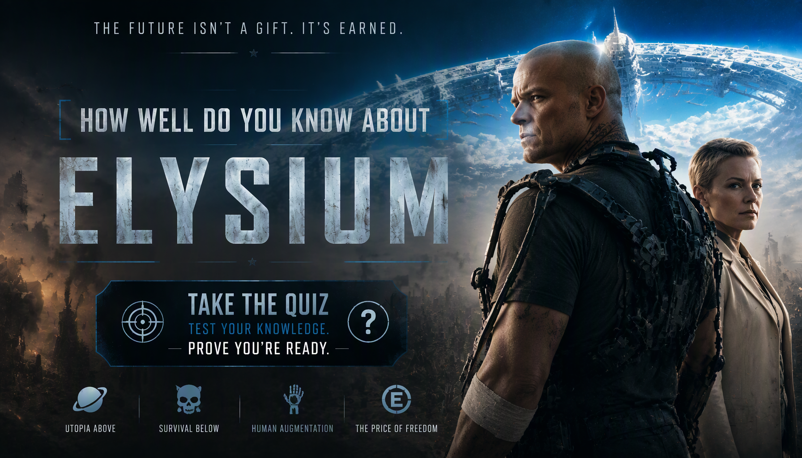

Elysium Quiz
Think you know Elysium? Test your knowledge of Max Da Costa, Frey, Spider, Elysium, Med-Bays, Armadyne and the struggle for survival.
Ready? See how much you remember about Elysium.
This quiz contains spoilers for Elysium.


About The Quiz
The Elysium Movie Quiz is a 20-question trivia challenge based on the 2013 science-fiction action film Elysium. The story follows Max Da Costa as he attempts to reach the wealthy space habitat Elysium after a life-threatening accident leaves him with only a limited amount of time to live.
The movie explores the extreme social divide between the people living on an impoverished Earth and the wealthy population living on Elysium, where advanced technology provides access to medical treatment unavailable to most people on Earth.
This quiz focuses on the movie's characters, Elysium's society, Armadyne, Med-Bays, Max's mission and important events from the story. It is designed for viewers who want to test how closely they remember Elysium.
Elysium Movie Details
Release year: 2013
Director: Neill Blomkamp
Genre: Science fiction, action and thriller
Main setting: Earth and the Elysium space habitat in the year 2154
Main character: Max Da Costa, played by Matt Damon
Central conflict: Max's attempt to reach Elysium and obtain advanced medical treatment.
How Quiz Works
The quiz contains 20 questions. Every question has four possible choices, but only one answer is correct. Read each question carefully and select the answer you believe is correct.
Each correct answer gives you 1 point, while an incorrect answer gives you 0 points. With 20 questions in total, your correct answers are converted into a final percentage.
Your final result represents how many questions you answered correctly. The result categories are based on your performance across the 20 questions.
Quiz Navigation
Starting the Quiz
Select START QUIZ on the opening screen to begin. The first question will appear with four possible answers.
Selecting an Answer
Read the question and all four choices before making your selection. Once you choose an answer, continue to the next question.
Next and Back Buttons
Use Next to move forward through the questions. The Back button allows you to return to an earlier question and review or change your selection. Your question number and progress are displayed as you move through the quiz.
Finishing the Quiz
Continue until all 20 questions have been answered. When you reach the end, submit your answers to finish the quiz and view your final score and knowledge result.
Try Again and Challenge Friends
After viewing your result, select TRY AGAIN to replay the quiz and attempt a higher score. You can also use SHARE MY RESULT or CHALLENGE YOUR FRIENDS to share your result.
FREQUENTLY ASKED QUESTIONS
How many questions are in the quiz?
There are 20 questions in total, and every question has four possible choices.
What is the maximum score?
The maximum result is 100%. Each correct answer contributes 1 point before the score is converted into a percentage.
What topics are covered?
The quiz covers Elysium, including Max Da Costa, Frey, Spider, Elysium, Med-Bays, Armadyne, John Carlyle, Jessica Delacourt and major events from the movie.
Which movie does this quiz cover?
This quiz focuses on the 2013 science-fiction action film Elysium, directed by Neill Blomkamp and starring Matt Damon, Jodie Foster, Sharlto Copley and Alice Braga.
Do I need to watch the movie before taking the quiz?
It is recommended. The questions are based on events, characters and details from the movie, including information that may be difficult to answer without having watched it.
What does my score mean?
Your percentage shows how many of the 20 questions you answered correctly. A higher percentage means you correctly remembered more of the movie's details.
Can I take the quiz again?
Yes. Select TRY AGAIN after completing the quiz to start another attempt and try to improve your score.
Can I challenge my friends?
Yes. Select CHALLENGE YOUR FRIENDS after completing the quiz to share the challenge and see whether your friends can beat your score.
Spoiler Warning
This quiz contains spoilers for Elysium. Questions may reveal important details about Max Da Costa, Frey, Spider, Elysium, Med-Bays, Armadyne, John Carlyle and other major events from the movie.
If you have not watched Elysium, consider watching the movie before taking the quiz to avoid having important story details revealed.